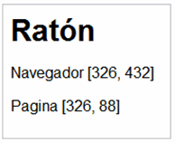
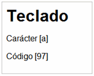
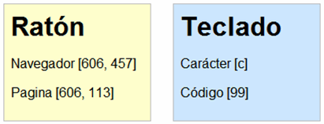

6.3. Obteniendo información del evento (objeto event)
Normalmente, los manejadores de eventos requieren información adicional para procesar sus tareas. Si una función por ejemplo se encarga de procesar el evento onclick, quizás necesite saber en que posición estaba el ratón en el momento de pinchar el botón.
No obstante, el caso más habitual en el que es necesario conocer información adicional sobre el evento es el de los eventos asociados al teclado. Normalmente, es muy importante conocer la tecla que se ha pulsado, por ejemplo para diferenciar las teclas normales de las teclas especiales (ENTER, tabulador, Alt, Ctrl., etc.).
JavaScript permite obtener información sobre el ratón y el teclado mediante un objeto especial llamado event. Desafortunadamente, los diferentes navegadores presentan diferencias muy notables en el tratamiento de la información sobre los eventos.
La principal diferencia reside en la forma en la que se obtiene el objeto event. Internet Explorer considera que este objeto forma parte del objeto window y el resto de navegadores lo consideran como el único argumento que tienen las funciones manejadoras de eventos.
Aunque es un comportamiento que resulta muy extraño al principio, todos los navegadores modernos excepto Internet Explorer crean mágicamente y de forma automática un argumento que se pasa a la función manejadora, por lo que no es necesario incluirlo en la llamada a la función manejadora. De esta forma, para utilizar este "argumento mágico", sólo es necesario asignarle un nombre, ya que los navegadores lo crean automáticamente.
En resumen, en los navegadores tipo Internet Explorer, el objeto event se obtiene directamente mediante:
var evento = window.event;
Por otra parte, en el resto de navegadores, el objeto event se obtiene mágicamente a partir del argumento que el navegador crea automáticamente:
function manejadorEventos(elEvento) { var evento = elEvento; }
Si se quiere programar una aplicación que funcione correctamente en todos los navegadores, es necesario obtener el objeto event de forma correcta según cada navegador. El siguiente código muestra la forma correcta de obtener el objeto event en cualquier navegador:
function manejadorEventos(elEvento) { var evento = elEvento || window.event; }
Una vez obtenido el objeto event, ya se puede acceder a toda la información relacionada con el evento, que depende del tipo de evento producido.
6.3.1. Información sobre el evento
La propiedad type indica el tipo de evento producido, lo que es útil cuando una misma función se utiliza para manejar varios eventos:
var tipo = evento.type;
La propiedad type devuelve el tipo de evento producido, que es igual al nombre del evento pero sin el prefijo on.
Mediante esta propiedad, se puede rehacer de forma más sencilla el ejemplo anterior en el que se resaltaba una sección de contenidos al pasar el ratón por encima:
function resalta(elEvento) { var evento = elEvento || window.event; switch(evento.type) { case 'mouseover': this.style.borderColor = 'black'; break; case 'mouseout': this.style.borderColor = 'silver'; break; } } window.onload = function() { document.getElementById("seccion").onmouseover = resalta; document.getElementById("seccion").onmouseout = resalta; } <div id="seccion" style="width:150px; height:60px; border:thin solid silver"> Sección de contenidos... </div>
6.3.2. Información sobre los eventos de teclado
De todos los eventos disponibles en JavaScript, los eventos relacionados con el teclado son los más incompatibles entre diferentes navegadores y por tanto, los más difíciles de manejar. En primer lugar, existen muchas diferencias entre los navegadores, los teclados y los sistemas operativos de los usuarios, principalmente debido a las diferencias entre idiomas.
Además, existen tres eventos diferentes para las pulsaciones de las teclas (onkeyup, onkeypress y onkeydown). Por último, existen dos tipos de teclas: las teclas normales (como letras, números y símbolos normales) y las teclas especiales (como ENTER, Alt, Shift, etc.)
Cuando un usuario pulsa una tecla normal, se producen tres eventos seguidos y en este orden: onkeydown, onkeypress y onkeyup. El evento onkeydown se corresponde con el hecho de pulsar una tecla y no soltarla; el evento onkeypress es la propia pulsación de la tecla y el evento onkeyup hace referencia al hecho de soltar una tecla que estaba pulsada.
La forma más sencilla de obtener la información sobre la tecla que se ha pulsado es mediante el evento onkeypress. La información que proporcionan los eventos onkeydown y onkeyup se puede considerar como más técnica, ya que devuelven el código interno de cada tecla y no el carácter que se ha pulsado.
A continuación se incluye una lista con todas las propiedades diferentes de todos los eventos de teclado tanto en Internet Explorer como en el resto de navegadores:
- Evento
keydown:- Mismo comportamiento en todos los navegadores:
- Propiedad
keyCode: código interno de la tecla - Propiedad
charCode: no definido
- Propiedad
- Mismo comportamiento en todos los navegadores:
- Evento
keypress:- Internet Explorer:
- Propiedad
keyCode: el código del carácter de la tecla que se ha pulsado - Propiedad
charCode: no definido
- Propiedad
- Resto de navegadores:
- Propiedad
keyCode: para las teclas normales, no definido. Para las teclas especiales, el código interno de la tecla. - Propiedad
charCode: para las teclas normales, el código del carácter de la tecla que se ha pulsado. Para las teclas especiales,0.
- Propiedad
- Internet Explorer:
- Evento
keyup:- Mismo comportamiento en todos los navegadores:
- Propiedad
keyCode: código interno de la tecla - Propiedad
charCode: no definido
- Propiedad
- Mismo comportamiento en todos los navegadores:
Para convertir el código de un carácter (no confundir con el código interno) al carácter que representa la tecla que se ha pulsado, se utiliza la función String.fromCharCode().
A continuación se incluye un script que muestra toda la información sobre los tres eventos de teclado:
window.onload = function() { document.onkeyup = muestraInformacion; document.onkeypress = muestraInformacion; document.onkeydown = muestraInformacion; } function muestraInformacion(elEvento) { var evento = window.event || elEvento; var mensaje = "Tipo de evento: " + evento.type + "<br>" + "Propiedad keyCode: " + evento.keyCode + "<br>" + "Propiedad charCode: " + evento.charCode + "<br>" + "Carácter pulsado: " + String.fromCharCode(evento.charCode); info.innerHTML += "<br>--------------------------------------<br>" + mensaje } ... <div id="info"></div>
Al pulsar la tecla a en el navegador Firefox, se muestra la siguiente sucesión de eventos:
-------------------------------------- Tipo de evento: keydown Propiedad keyCode: 65 Propiedad charCode: 0 Carácter pulsado: ? -------------------------------------- Tipo de evento: keypress Propiedad keyCode: 0 Propiedad charCode: 97 Carácter pulsado: a -------------------------------------- Tipo de evento: keyup Propiedad keyCode: 65 Propiedad charCode: 0 Carácter pulsado: ?
Al pulsar la tecla A (la misma tecla, pero habiendo activado previamente las mayúsculas) se muestra la siguiente sucesión de eventos en el navegador Firefox:
-------------------------------------- Tipo de evento: keydown Propiedad keyCode: 65 Propiedad charCode: 0 Carácter pulsado: ? -------------------------------------- Tipo de evento: keypress Propiedad keyCode: 0 Propiedad charCode: 65 Carácter pulsado: A -------------------------------------- Tipo de evento: keyup Propiedad keyCode: 65 Propiedad charCode: 0 Carácter pulsado: ?
En los eventos keydown y keyup, la propiedad keyCode sigue valiendo lo mismo en los dos casos. El motivo es que keyCode almacena el código interno de la tecla, por lo que si se pulsa la misma tecla, se obtiene el mismo código, independientemente de que una misma tecla puede producir caracteres diferentes (por ejemplo mayúsculas y minúsculas).
En el evento keypress, el valor de la propiedad charCode varía, ya que el carácter a, no es el mismo que el carácter A. En este caso, el valor de charCode coincide con el código ASCII del carácter pulsado.
Siguiendo en el navegador Firefox, si ahora se pulsa una tecla especial, como por ejemplo el tabulador, se muestra la siguiente información:
-------------------------------------- Tipo de evento: keydown Propiedad keyCode: 9 Propiedad charCode: 0 Carácter pulsado: ? -------------------------------------- Tipo de evento: keypress Propiedad keyCode: 9 Propiedad charCode: 0 Carácter pulsado: ? -------------------------------------- Tipo de evento: keyup Propiedad keyCode: 9 Propiedad charCode: 0 Carácter pulsado: ?
Las teclas especiales no disponen de la propiedad charCode, ya que sólamente se guarda el código interno de la tecla pulsada en la propiedad keyCode, en este caso el código 9. Si se pulsa la tecla Enter, se obtiene el código 13, la tecla de la flecha superior produce el código 38, etc. No obstante, dependiendo del teclado utilizado para pulsar las teclas y dependiendo de la disposición de las teclas en función del idioma del teclado, estos códigos podrían variar.
A continuación se muestra el resultado de la ejecución del mismo ejemplo anterior en el navegador Internet Explorer. Al pulsar la tecla a, se obtiene la siguiente información:
-------------------------------------- Tipo de evento: keydown Propiedad keyCode: 65 Propiedad charCode: undefined Carácter pulsado: -------------------------------------- Tipo de evento: keypress Propiedad keyCode: 97 Propiedad charCode: undefined Carácter pulsado: -------------------------------------- Tipo de evento: keyup Propiedad keyCode: 65 Propiedad charCode: undefined Carácter pulsado:
La propiedad keyCode en el evento keypress contiene el código ASCII del carácter de la tecla, por lo que se puede obtener directamente el carácter mediante String.fromCharCode(keyCode).
Si se pulsa la tecla A, la información mostrada es idéntica a la anterior, salvo que el código que muestra el evento keypress cambia por 65, que es el código ASCII de la tecla A:
-------------------------------------- Tipo de evento: keydown Propiedad keyCode: 65 Propiedad charCode: undefined Carácter pulsado: -------------------------------------- Tipo de evento: keypress Propiedad keyCode: 65 Propiedad charCode: undefined Carácter pulsado: -------------------------------------- Tipo de evento: keyup Propiedad keyCode: 65 Propiedad charCode: undefined Carácter pulsado:
Al pulsar una tecla especial como el tabulador, Internet Explorer muestra la siguiente información:
-------------------------------------- Tipo de evento: keydown Propiedad keyCode: 9 Propiedad charCode: undefined Carácter pulsado:
Los códigos mostrados para las teclas especiales coinciden con los de Firefox y el resto de navegadores, pero recuerda que pueden variar en función del teclado que se utiliza y en función de la disposición de las teclas para cada idioma.
Por último, las propiedades altKey, ctrlKey y shiftKey almacenan un valor booleano que indica si alguna de esas teclas estaba pulsada al producirse el evento del teclado. Sorprendentemente, estas tres propiedades funcionan de la misma forma en todos los navegadores:
if(evento.altKey) { alert('Estaba pulsada la tecla ALT'); }
A continuación se muestra el caso en el que se pulsa la tecla Shift y sin soltarla, se pulsa sobre la tecla que contiene el número 2 (en este caso, se refiere a la tecla que se encuentra en la parte superior del teclado y por tanto, no se refiere a la que se encuentra en el teclado numérico). Tanto Internet Explorer como Firefox muestran la misma secuencia de eventos:
-------------------------------------- Tipo de evento: keydown Propiedad keyCode: 16 Propiedad charCode: 0 Carácter pulsado: ? -------------------------------------- Tipo de evento: keydown Propiedad keyCode: 50 Propiedad charCode: 0 Carácter pulsado: ? -------------------------------------- Tipo de evento: keypress Propiedad keyCode: 0 Propiedad charCode: 34 Carácter pulsado: " -------------------------------------- Tipo de evento: keyup Propiedad keyCode: 50 Propiedad charCode: 0 Carácter pulsado: ? -------------------------------------- Tipo de evento: keyup Propiedad keyCode: 16 Propiedad charCode: 0 Carácter pulsado: ?
El evento keypress es el único que permite obtener el carácter realmente pulsado, ya que al pulsar sobre la tecla 2 habiendo pulsado la tecla Shift previamente, se obtiene el carácter ", que es precisamente el que muestra el evento keypress.
El siguiente código de JavaScript permite obtener de forma correcta en cualquier navegador el carácter correspondiente a la tecla pulsada:
function manejador(elEvento) { var evento = elEvento || window.event; var caracter = evento.charCode || evento.keyCode; alert("El carácter pulsado es: " + String.fromCharCode(caracter)); } document.onkeypress = manejador;
6.3.3. Información sobre los eventos de ratón
La información más relevante sobre los eventos relacionados con el ratón es la de las coordenadas de la posición del puntero del ratón. Aunque el origen de las coordenadas siempre se encuentra en la esquina superior izquierda, el punto que se toma como referencia de las coordenadas puede variar.
De esta forma, es posible obtener la posición del ratón respecto de la pantalla del ordenador, respecto de la ventana del navegador y respecto de la propia página HTML (que se utiliza cuando el usuario ha hecho scroll sobre la página). Las coordenadas más sencillas son las que se refieren a la posición del puntero respecto de la ventana del navegador, que se obtienen mediante las propiedades clientX y clientY:
function muestraInformacion(elEvento) { var evento = elEvento || window.event; var coordenadaX = evento.clientX; var coordenadaY = evento.clientY; alert("Has pulsado el ratón en la posición: " + coordenadaX + ", " + coordenadaY); } document.onclick = muestraInformacion;
Las coordenadas de la posición del puntero del ratón respecto de la pantalla completa del ordenador del usuario se obtienen de la misma forma, mediante las propiedades screenX y screenY:
var coordenadaX = evento.screenX; var coordenadaY = evento.screenY;
En muchas ocasiones, es necesario obtener otro par de coordenadas diferentes: las que corresponden a la posición del ratón respecto del origen de la página. Estas coordenadas no siempre coinciden con las coordenadas respecto del origen de la ventana del navegador, ya que el usuario puede hacer scroll sobre la página web. Internet Explorer no proporciona estas coordenadas de forma directa, mientras que el resto de navegadores sí que lo hacen. De esta forma, es necesario detectar si el navegador es de tipo Internet Explorer y en caso afirmativo realizar un cálculo sencillo:
// Detectar si el navegador es Internet Explorer var ie = navigator.userAgent.toLowerCase().indexOf('msie')!=-1; if(ie) { coordenadaX = evento.clientX + document.body.scrollLeft; coordenadaY = evento.clientY + document.body.scrollTop; } else { coordenadaX = evento.pageX; coordenadaY = evento.pageY; } alert("Has pulsado el ratón en la posición: " + coordenadaX + ", " + coordenadaY + " respecto de la página web");
La variable ie vale true si el navegador en el que se ejecuta el script es de tipo Internet Explorer (cualquier versión) y vale false en otro caso. Para el resto de navegadores, las coordenadas respecto del origen de la página se obtienen mediante las propiedades pageX y pageY. En el caso de Internet Explorer, se obtienen sumando la posición respecto de la ventana del navegador (clientX, clientY) y el desplazamiento que ha sufrido la página (document.body.scrollLeft, document.body.scrollTop).
Ejercicio 15
Completar el código JavaScript proporcionado para que:- Al mover el ratón en cualquier punto de la ventana del navegador, se muestre la posición del puntero respecto del navegador y respecto de la página: Para mostrar los mensajes, utilizar la función
Figura 6.1 Información que se muestra para los eventos del ratón
muestraInformacion()deduciendo su funcionamiento a partir de su código fuente. - Al pulsar cualquier tecla, el mensaje mostrado debe cambiar para indicar el nuevo evento y su información asociada: 
Figura 6.2 Información que se muestra para los eventos del teclado
- Añadir la siguiente característica al script: cuando se pulsa un botón del ratón, el color de fondo del cuadro de mensaje debe ser amarillo (
#FFFFCC) y cuando se pulsa una tecla, el color de fondo debe ser azul (#CCE6FF). Al volver a mover el ratón, el color de fondo vuelve a ser blanco.Figura 6.3 El color de fondo del cuadro de información cambia en función del tipo de evento
Ejercicio 16
Crear un script que informe al usuario en que zona de la pantalla ha pulsado el ratón. Las zonas definidas son las siguientes: izquierda arriba, izquierda abajo, derecha arriba y derecha abajo. Para determinar el tamaño de la ventana del navegador, utilizar la funcióntamanoVentanaNavegador() proporcionada.
Compartir
Indice de contenidos
- 1 Introducción
- 2 El primer script
- 3 Programación básica
- 4 Programación avanzada
- 5 DOM
- Capítulo 6. Eventos
- 6.1. Modelos de eventos
- 6.2. Modelo básico de eventos
- 6.3. Obteniendo información del evento (objeto event)
- 7 Formularios
- 8 Otras utilidades
- 9 Detección y corrección de errores
- 10 Recursos útiles
- 11 Ejercicios resueltos